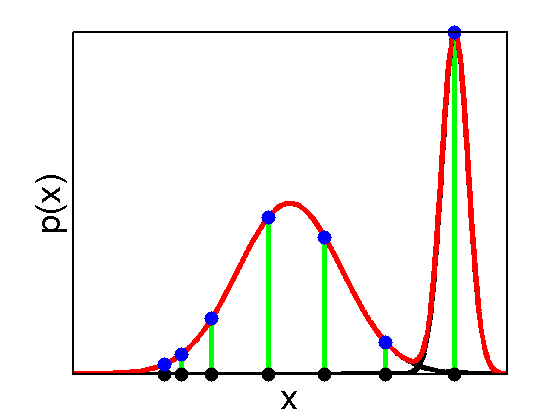

Illustration of a GMM singularity
f1 = @(x) gaussProb(x,0.5,0.12.^2);
f2 = @(x) gaussProb(x,0.88,0.03.^2)/2;
f3 = @(x) f1(x) + f2(x);
domain = 0:0.001:1;
dataPoints = [0.21 0.25 0.32 0.45 0.58 0.72 0.88];
figure; hold on;
stem(dataPoints',f3(dataPoints)','Color','g','LineWidth',4);
plot(domain,f1(domain),'-k','LineWidth',4);
plot(domain,f2(domain),'-k','LineWidth',4);
plot(domain,f3(domain),'-r','LineWidth',4);
plot(dataPoints,zeros(size(dataPoints)),'.k','MarkerSize',35);
plot(dataPoints,f3(dataPoints),'.b','MarkerSize',35);
xlabel('x','FontSize',20);
ylabel('p(x)','FontSize',20);
set(gca,'FontSize',18,'LineWidth',2,'XTick',[],'YTick',[],'box','on');
axis tight;
xlabel('x','FontSize',26);
ylabel('p(x)','FontSize',26);
set(gca,'FontSize',18,'LineWidth',2,'XTick',[],'YTick',[],'box','on');
printPmtkFigure('gmmSingularity');
